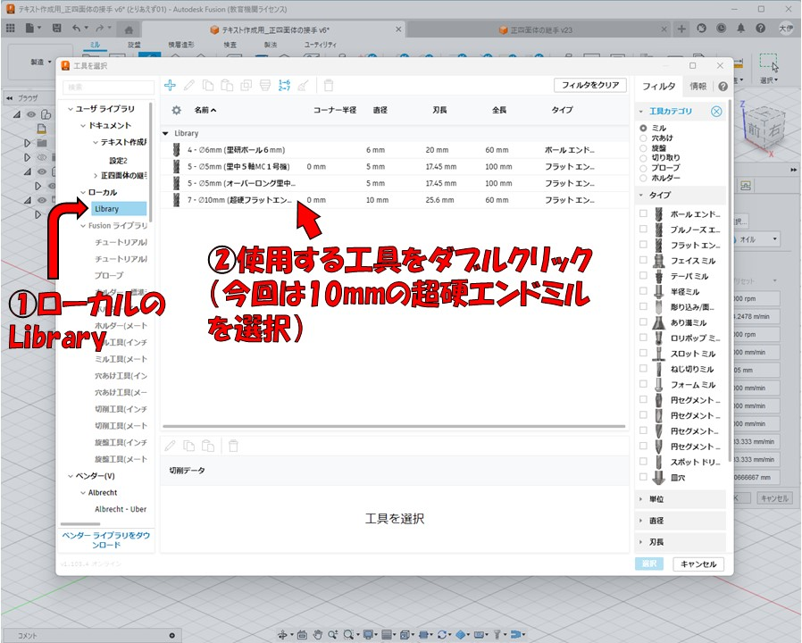
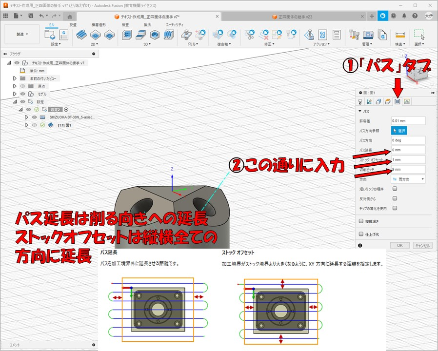
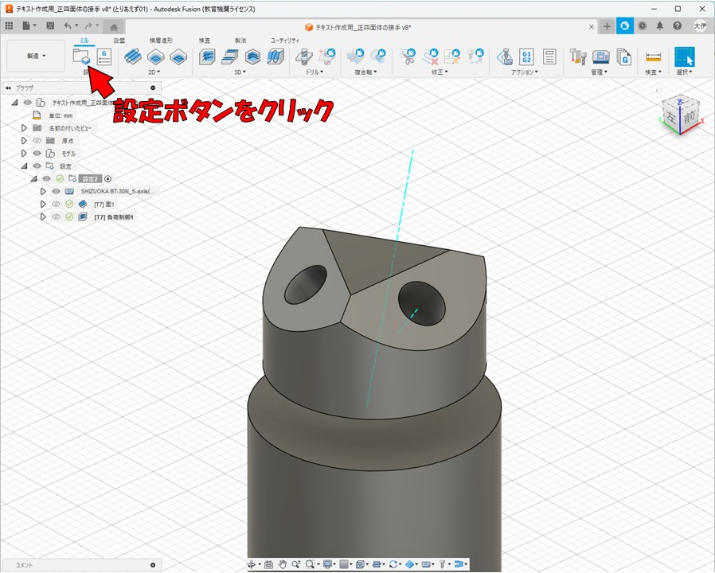
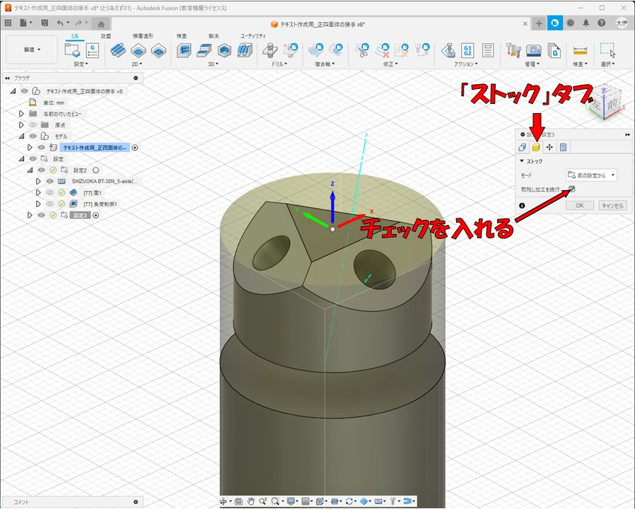
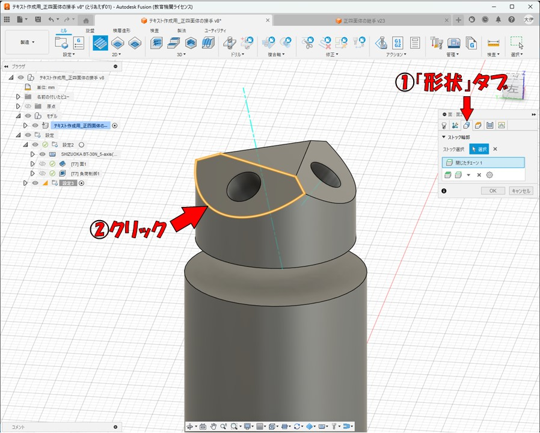
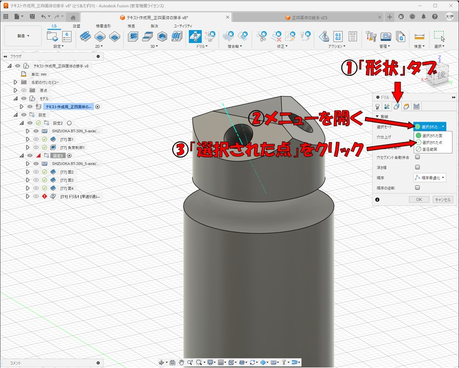
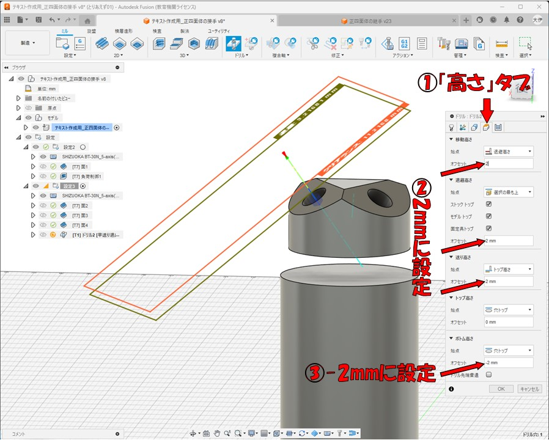
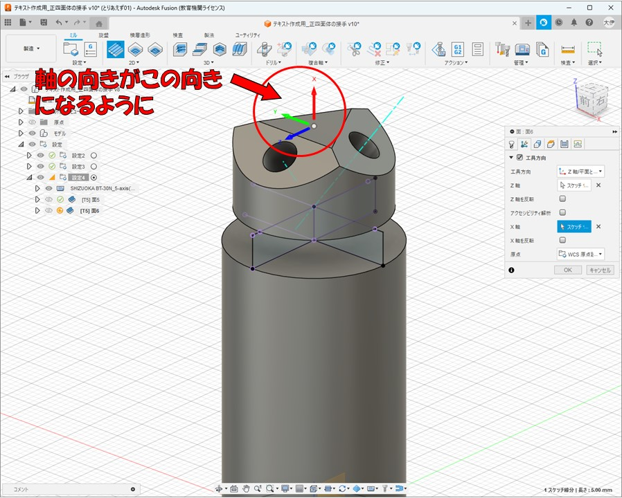

FusionCAMの使い方
ツールパスの作成方法
（正四面体の接手での例）
前回のテキストはこちら
04 FusionCADの使い方 CADモデリングの手順
目次
CADからCAMへの切り替え
前回のFusionCADの使い方のテキストにて、このような部品をモデリングしてもらったと思います。
ここでは、実際に５軸マシニングセンタでこの部品を削り出すために必要な作業のやり方について作成します。
まず、画面の左上にある「デザイン」と書かれた所をクリックしてメニューを開いて、「製造」をクリックしてください。
そうすると、画面の上に出ているツールバーのボタンや画面左のツリーなど、画面上の表示がいろいろ変わったと思います。
Fusionでは、ワークスペースをこの「製造」に切り替えることにより、CAMの作業を行うことができるようになります。
同じくワークスペースを「デザイン」に戻すと、CADの作業を行うモードになります。
Fusionでは部品の設計とモデリングを行う「CAD」と部品の加工に関する設定を行う「CAM」をこのように簡単に瞬時に切り替えることができます。
ツールパスの作成
CAMでの作業を説明します。まず「ツールパス」の作成をしてもらいます。
ツールパスとは、材料の位置を基準とた時のマシニングセンタの刃物の先端の動きの軌跡のラインのことです。
まだピンとこないと思いますが実際に作業をしながら感覚を掴んでいきましょう。
最初に、「設定」を１つ作成します。「設定」ボタンをクリックしてください。
そうすると画面右側にウインドウが出ます。まず加工に使用する加工機を選択します。
「マシン」と書かれた右の「選択」と書かれたボタンをクリックしてください。

すると、さまざまな加工機が並ぶマシンライブラリのウインドウが開くので、
「ローカル」と書かれた場所をクリックして、一番最初のテキストで自分で追加してもらった
５軸マシニングセンタをダブルクリックして選択してください。
次は削りだす形状のモデルを選択します。「モデル」と書かれた右の「選択」ボタンをクリックしてから、
左のツリーでモデルの所の▶をクリックして開いて、ファイル名が書かれた部分をクリックして選択してください。
「設定」タブでの作業は以上なので、「ストック」タブでの作業に移ります。クリックしてタブを切り替えてください。
「モード」と書かれた右のメニューをクリックして開いて、「固定サイズの円柱」をクリックして選択してください。
ここでいう「ストック」というのは、切削加工を行う前の材料の形状のことです。
今回使う材料は直径25mm、高さ60mmの円柱なので、ストック直径に25、長さに60と入力してください。
「モデル位置」を切り替えてオフセットの値を入力することで、削り出す部品のモデルに対してストックの位置をずらすことも可能です
今回は中心のままで進めます。

「ストック」タブでの作業は以上なので、「パーツの位置」タブでの作業に移ります。クリックしてタブを切り替えてください。
ここでは材料を取り付ける位置を指定します。今回は「Z距離」に「24.75」と入力してください。
この値は、初期設定では加工機のチャックの穴の底面から、取り付ける材料の底面までの距離になっていますが、「固定具店」と
「テーブルのアタッチ点」を変更することで変更可能です。またこれは材料の寸法と材料の取り付け位置によって
変わるので自分で計測・計算を行って入力することを推奨します。
※この24.75mmは、2024年12月時点で、高さ60mmの円柱材料を加工する際に計測した値です。
「パーツの位置」タブでの作業は以上なので、「ポスト処理」タブでの作業に移ります。クリックしてタブを切り替えてください。
「WCSオフセット」の値を０から１に変更してください。Z
このWCSオフセットはG54からG59までの５つのワーク座標原点のうちどれを使用するのかを設定できる項目で、
下の画像のような対応になっています。ここではまずG54を用いるので１と入力してください。
「ワーク座標原点」が何かわからない人は、以下の解説を読むか、調べるか、先生に聞くかしてください。
これで設定での入力項目は全てなのでOKをクリックして設定を作成してください。

【解説】ワーク座標とは何か
CNC加工機は制御プログラム（通称Gコード）内に書かれた３次元座標の値の通りに工具の先端が移動します。
しかし、座標を数値で指定するには、その基準となるX=0,Y=0,Z=0の原点が必要です。
そのためプログラム制御で動くCNC工作機械は全て、まず「機械原点」を１つ設定されています。
この機械原点をX=0,Y=0,Z=0の点としてGコードを作って制御してもよいですが、もっと便利でGコードの生成が
しやすくなる方法があります。それが「ワーク座標原点」をつくることです。ワーク座標原点とは、機械原点を基準に
任意の座標に設定できるもう一つの原点です。これを複数作っておいて、加工によって使い分けることができます。
ワーク座標原点はG54からG59まで５つ設定でき、Gコード内でG54からG59までの各コードを書くとそれ以降はそのワーク座標原点を
原点（X=0,Y=0,Z=0）として加工が再開します。
つまり、加工機本体の設定画面で、G54ワーク座標原点をX=10,Y=10,Z=10に設定して、Gコード内でG54と打ってから
座標を打ち込んでいくと、機械原点から見て全ての座標が＋10されるということです。
この概念は難しいので詳しくは担当の先生に質問することを推奨します。
上面出し切削
設定ができたら、ツールパスの作成をします。まず材料の上の面を平にする上面出しの切削加工のツールパスの作成を行います。
ツールバーの2Dの所にある「面」ボタンをクリックしてください。平らな面を削り出す時に使うものです。
まずこの加工で使用する工具を選択します。「工具」と書かれた右にある選択ボタンをクリックしてください。
そうすると「工具ライブラリ」ウインドウが開きます。ローカルの下の「Library」を押すと、自分で作った
工具がいくつか表示されるので、その中からこの面切削で使用する工具をダブルクリックして選択してください。
ここでは事前に５軸MCに搭載されていた直径10mmの超硬合金製エンドミルを採寸して作成した工具を選択します。

そうすると、選択した工具の作成時に設定した通りの値が自動的に入力されるので特に理由が無ければそのまま
続行します。
次は「高さ」タブに移動してください。このタブでは工具が動く高さの設定ができます。
画像に示すように、移動高さ、退避高さ、送り高さのオフセットの値を2mmに変更してください。
この３つの高さは切削の前や後などに工具が空中を移動する際の高さです。
今回使用する５軸MCは高さ方向の可動域が非常に狭いので高さを低くしています。
次は「パス」タブです。このタブではツールパスの描かれ方の設定ができます。
ここではパス延長を0mmに、ストックオフセットを1mmにしてください。
切削ピッチは9mmにしてください。切削ピッチは何mmずつ削っていくのかの値です。通常は
0.5～2mm程度にしますが、この切削では削る厚さ（高さ）が薄い（0.5mm程度）なので
加工時間削減のために大きな値にしています。

次は「リンク」タブです。このタブでは、工具が切削する前や後などの工具の移動の仕方の
設定ができます。
進入動作の所の「進入」と「退出」からチェックを外し、遷移タイプを「直線」にしてください。
こうすると無駄な動きが減って直線的なツールパスになり、加工時間が少し短縮されます。
これで設定は終わりです。OKボタンを押すとツールパスが生成されます。
粗削り
次は部品全体を粗削りするツールパスを作成します。3Dの中の「3D負荷制御」ボタンをクリックしてください。
１番最初に粗削りするときに使用するものです。

負荷制御のウインドウが出てきたら、さっき面切削のツールパス作成の際に選んだ工具が既に選択されているはずです。
今回はこのまま進めます。
次は「高さ」タブです。移動高さと退避高さのオフセット値を2mmに変更してください。
ボトム高さは、今回はメニューを開いて「選択」に切り替えて、図に示す面をクリックして選択してください。
次は「パス」タブです。変更箇所が多いので注意してください。
「最適負荷」の値は、さっきの切削ピッチと同じくXY平面方向に何mmずつ削るのかの値です。0.5mm～2mm程度を入力してください。
「両方向」にチェックを入れてください。工具がダウンカットとアップカット両方向で切削するようになって加工時間が短縮できます。
「逆方向送り速度」には、この加工に使用している工具の切削送り速度と同じ値を入力してください。
工具タブにて確認できます。


「最大粗取り切り取りピッチ」と「中間切込みピッチ」は高さ方向に何mmずつ削っていくかを指定する値です。
最大粗取り切り取りピッチには2～5mm、中間切込みピッチには0.1～1mm程度を入力してください。
「仕上げ代」は今回は0mmにするのでチェックを外してください。
最後にOKを押すと自動で最適なツールパスが作成されます。
斜めの面切削
今までは材料を傾けずに加工していましたが、次は材料を傾けて加工します。
材料を傾けるときはワーク座標原点を変更することを推奨します。
ワーク座標原点を変更する際はもう一度「設定」を作成します。設定ボタンをクリックしてください。

まず削り出すモデルを選択します。画像のとおりクリックしてください
次にストックタブに移動して、「取残し加工を続行」にチェックを入れてください。

次はパーツの位置タブに移動して、１つ目の設定の時と全く同じ位置にしてください。

次はポスト処理タブに移動して、WCSオフセットに２と入力してOKをクリックしてください。
部品の上の面の斜めの面を削り出すツールパスを作成します。面ボタンを押してください。
工具は今回はそのままいくので変更しません。複合軸タブに移動して、「工具方向」
にチェックを入れてください。このタブは、５軸MCのB軸を動かして材料を傾けて加工する際に使います。
工具の向きを斜めに設定することができます。
工具方向にチェックを入れたら、画像に示す通りに順番にクリックしてください。
Z軸の方向とX軸の方向が、選択した面に垂直な向きや、選択した辺に平行な向きに変更されます。
次は形状タブに移動して、図に示す図形の輪郭をクリックしてください。
クリックしてオレンジ色の線で囲われた面が、切削が行われる面になります。

高さタブに移動して、図に示すオフセットの値を2mm程度に設定してください。5mm程度にしても
問題はありません。があまり大きくはしないでください。
パスタブに移動して、例のごとくパス延長を0mmに、ストックオフセットを1mmにしてください。
「パス方向参照」の右の選択をクリックしてから、図に示す辺をクリックして選択してください。
ここで選択した辺に平行な向きに切削加工が行われるようになります。
また、今回は削る厚さ（高さ）があるので、切削ピッチは0.5～1mm程度にしてください。
リンクタブに移動して、進入と退出のチェックボックスからチェックを外して、「遷移タイプ」を
直線に切り替えてください。
OKをクリックするとツールパスが作成されます。
今のと全く同じ手順でのこり２つの斜めの面の切削のツールパスを作成してください。
穴あけ
次は今削った斜めの面に穴を開けていきます。「ドリル」ボタンをクリックしてください。
外形の切削ではなく穴あけなので、工具をエンドミルからドリルに変更します。
「工具」右の選択ボタンをクリックして工具ライブラリを開き、センタドリルを選択してください。
センタドリルとは先端のみ直径が小さい形状で長さも短いドリルで、剛性が高いです。
穴あけをする際はまず１番最初にこのセンタドリルを用いて下穴を開けてください。
複合軸タブに移動して、さっきの面切削のときと同じようにZ軸の方向とX軸の方向を設定してください。
形状タブに移動して、「選択モード」のメニューをクリックして開き、「選択された点」をクリックしてください。
その後、穴の口のエッジをクリックしてください。穴が選択されます。

高さタブに移動して、移動高さ、退避高さ、送り高さを２mm程度に変更してください。
ボトム高さは、穴あけでは穴の底の高さとなります。深さ2mmの下穴を開けるので-2mmと入力してください。

パスタブに移動して「サイクルタイプ」が「早送り退出」になっていることを確認して、OKを押してください。
今のと全く同じ手順でのこり２つの穴の下穴を開けるツールパスを作成してください。
センタドリルで下穴を開けたので、次は穴を深くします。ドリルボタンをクリックしてください。
センタドリルから、今度は直径3mmのドリルを選択します。今回開けたいのは直径5mmの穴ですが、
直径2～3mmの下穴をしっかり開けてから5mmの穴を開けるなどして、徐々に穴を広げた方が
工具への負担が少なくなります。
複合軸タブに移動して、もう全く同じ手順が７回目ですからわかると思います。同じように
Z軸とX軸の向きを指定してください。
形状タブに移動して、先ほどと同じく選択モードを「選択された点」に切り替えて、穴の口のエッジを選択してください。
高さタブに移動し、移動高さと退避高さと送り高さのオフセットを2mmにしてください。
ボトム高さは穴の底面の高さにしたいので、始点を選択に切り替えて穴の底面をクリックしてください。
パスタブに移動して、サイクルタイプを「深穴ドリル-完全退避」に切り替えてください。
このモードにすると、指定した深さだけ掘るたびに切りくずを穴から外に出すためにドリルを穴の口の高さ
まで上げて、少しずつ穴を掘るようになります。
深い穴を開ける際は必ずこのモードに切り替えてください。
切り替えたら追加の設定項目が出てきます。「ペック高さ」は何mm掘るたびにドリルを上げるかの
値です。0.5～5mm程度の数値を入れてください。
OKをクリックするとツールパスが作成されます。
今のと全く同じ手順でのこり２つの深穴開けのツールパスを作成してください。
次はついに5mmの穴を開けます。ドリルボタンをクリックしてください。
また工具を変更します。工具の選択ボタンをクリックして工具ライブラリを開いてください。
この直径5mmの穴には直径5mmの棒を差し込むので、穴の底面を円錐型ではなく平面にしたいです。
こういう時はドリルではなくエンドミルを使って穴を開けます。（下穴は必須）
ローカルのLibraryを押しても工具ライブラリにはドリルしか表示されていないと思うので、
工具カテゴリの✖マークをクリックしてフィルタを解除してください。

フィルタを解除するとエンドミルも表示されるので直径5mmのエンドミルを選択してください。
複合軸タブにておなじみの作業をしてください。
形状タブにて選択モードを選択された点に変更して穴の口のエッジを選択してください。
高さタブでの作業はさっきの3mmの深穴開けの時と全く同じです。移動高さと退避高さと送り高さのオフセット値を
2mm程度にしてからボトム高さの始点を選択にして穴の底面をクリックしてください。
パスタブにて、さきほどと同じくサイクルタイプを「深穴ドリル-完全退避」に変更して、
ペック高さを入力してください。エンドミルを使用して穴を開ける際や直径の大きな穴を
開ける際はペック高さを小さめにすることを推奨します。
OKをクリックするとツールパスが作成されます。
今のと全く同じ手順でのこり２つの深穴開けのツールパスを作成してください。
部品の切り落とし
最後に、材料を90度傾けて、部品を円柱から切り落とす加工のツールパスを作成します。
材料の角度がまた変わるので、ワーク座標原点を変更します。設定ボタンを押してください。
１点を除いてさっきの設定と全く同じ手順なので画像を見て進めてください。
ただし、ポスト処理タブでの「WCSオフセット」の値は３にしておいてください。
ここで、部品を切り落とすツールパスの作成のために、スケッチを描く必要があるので
一度作業スペースをデザインに戻してください。
YZ平面でスケッチを開始してください。
画像のように適当な四角形を描いてください。
一致拘束にて、画像のように、描いた四角形を円柱と部品の間になるように拘束してください。
点と辺をクリックすることでこの２つが一致するように拘束されます。
描いた四角形のラインが青色から黒に変わったら拘束が上手くいっています。
スケッチを終了してください。
次は、さっきとは直交する面（さっきがYZ平面なら今回はXZ平面）でスケッチを開始してください。
さっき描いた四角形より右側に適当な四角形を描いてください。
一致拘束にて、画像のように右側半分に四角形を一致させてください。
スケッチを終了してください。
下の画像のようになっていればOKです。
もう一度スケッチを行います。画像のようにまた１つ目のスケッチと同じ平面でスケッチを開始してください。
また適当な四角形を作図してください。
一致拘束を用いて画像の赤い四角形の位置に拘束してください。
スケッチを終了してください。
スケッチはもうこれで終わりなので、作業スペースを製造に戻してください。
円柱から部品を切り落とすツールパスを作成します。今回は３回に分けて切り落とします。
面ボタンをクリックしてください。
工具を選択します。工具の右の選択ボタンを押して工具ライブラリを開き、直径5mmのエンドミルを選択してください。
複合軸タブに移動して、工具方向にチェックを入れて、図のようにZ軸とX軸の向きと方向を指定してください。
「Z軸」「X軸」と書かれた右の選択ボタンをクリックした後にさっきスケッチした長方形の辺をクリックしてください。
「〇軸を反転」の右のチェックボックスにチェックを入れると軸の方向がプラスマイナス反転します。
X、Y、Zの軸の矢印が図と同じになったらOKです。
形状タブに移動して、さっき描いた長方形をクリックしてください。
高さタブに移動して、例のごとく移動高さ、送り高さ、送り高さのオフセット値を2mm程度に変更してください。
ボトム高さの始点を選択に変更して、さっき描いた長方形のいずれかの点をクリックしてください。
また、オフセットは-1mm程度に変更しておいてください。0mmのままだと削り残しができて
切り落とし切れない可能性があるので。
パスタブに移動して、「パス方向参照」の右の選択ボタンをクリックした後に
図に示す辺をクリックして選択してください。切削する向きがこの辺に平行な向きになります。
パス延長を2mmに設定してください。
切削ピッチを、今回に限って工具の直径より大きい値を入れてください。適当でよいです。
「複数深さ」にチェックを入れて、最大切込みピッチを1mmに設定してください。ここは1mm以下にすることを推奨します。
リンクタブに移動して、画像のように操作してOKを押してください。
このようなツールパスが作成されるはずです。
また切削します。面ボタンをクリックしてください。
複合タブにて、今度は図のように、大きい方の長方形の辺がZ軸の向きになるようにしてください。
さっきとは90度違う角度となります。
軸の向きが図と逆向きの時は図に示すチェックボックスにチェックを入れて向きを反転させてください。
この図と同じ向きになっていたらOKです。

形状タブに移動して、さっき描いた小さい方の長方形をクリックしてください。
高さタブに切り替えて、例のごとく移動高さ、送り高さ、送り高さのオフセット値を2mm程度に変更してください。
ボトム高さの始点を選択に変更して、さっき描いた小さい長方形のいずれかの点をクリックしてください。
また、オフセットは-1mm程度に変更しておいてください。
パスタブに移動して、「パス方向参照」の右の選択ボタンをクリックした後に
図に示す辺をクリックして選択してください。
パス延長を2mmに設定してください。
切削ピッチはさっきと同じく工具の直径より大きい値を入れてください。
「複数深さ」にチェックを入れて、最大切込みピッチを1mmに設定してください。
リンクタブに移動して、画像のように操作してOKを押してください。
このようなツールパスが作成されるはずです。
また切削します。面ボタンをクリックしてください。
複合タブにて、今度は図のように、小さい方の長方形の辺がZ軸の向きになるようにしてください。
また90度変わる形になります。
軸の向きが図と逆向きの時は図に示すチェックボックスにチェックを入れて向きを反転させてください。
この図と同じ向きになっていたらOKです。
形状タブに移動して、さっき描いた小さい方の長方形をクリックしてください。
高さタブに切り替えて、例のごとく移動高さ、送り高さ、送り高さのオフセット値を2mm程度に変更してください。
ボトム高さの始点を選択に変更して、さっき描いた小さい長方形のいずれかの点をクリックしてください。
また、オフセットは-1mm程度に変更しておいてください。
パスタブに移動して、「パス方向参照」の右の選択ボタンをクリックした後に
図に示す辺をクリックして選択してください。
パス延長を2mmに設定してください。
切削ピッチはさっきと同じく工具の直径より大きい値を入れてください。
「複数深さ」にチェックを入れて、最大切込みピッチを1mmに設定してください。
リンクタブに移動して、画像のように操作してOKを押してください。
このようなツールパスが作成されるはずです。

これで、ツールパスの作成は完了です。次のテキストに進んでください。
次回のテキストはこちら
06 FusionCAMの使い方 シミュレーションとGコードの生成